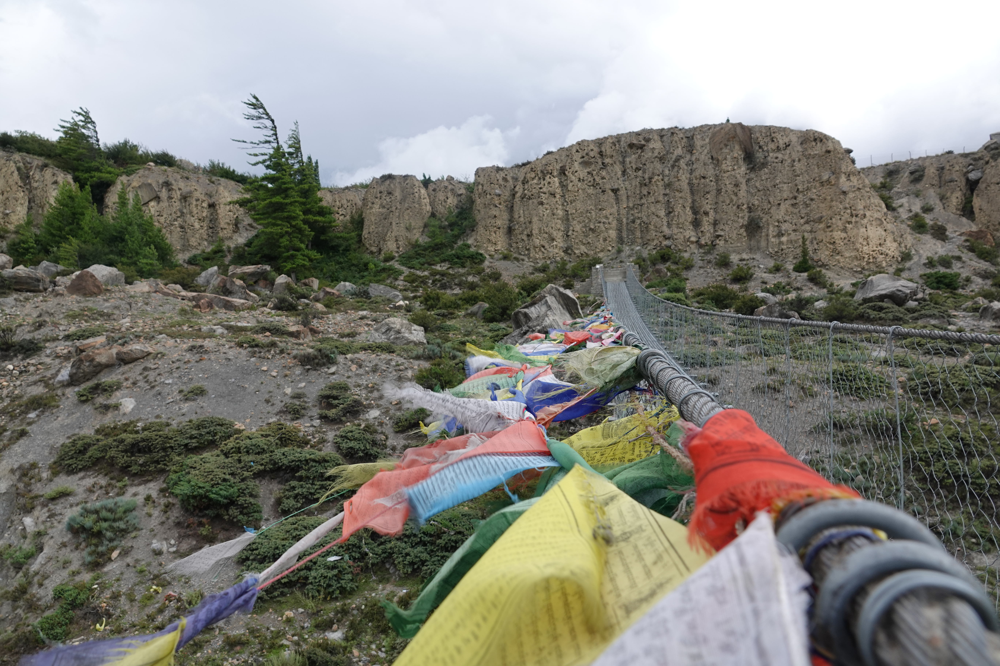
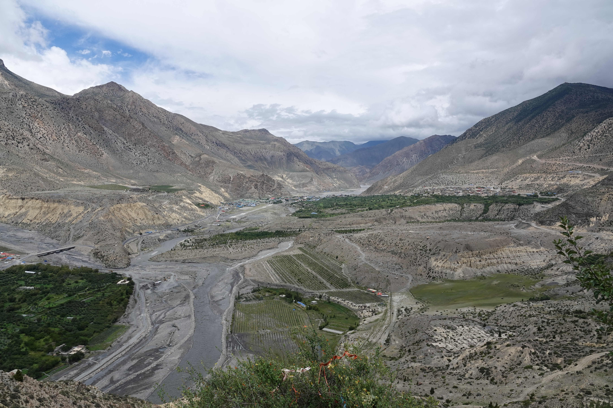
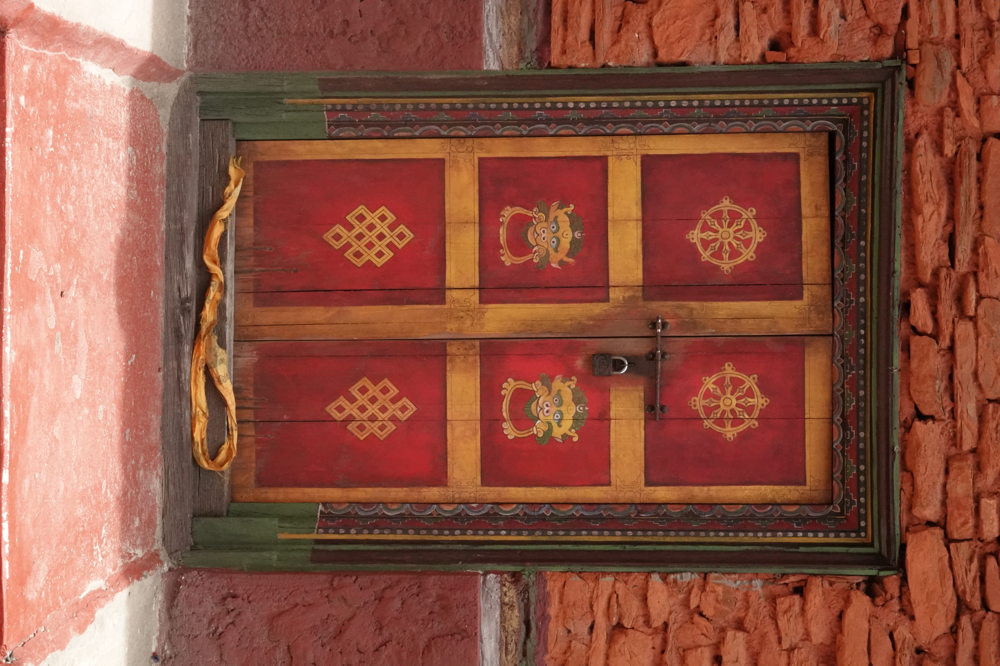
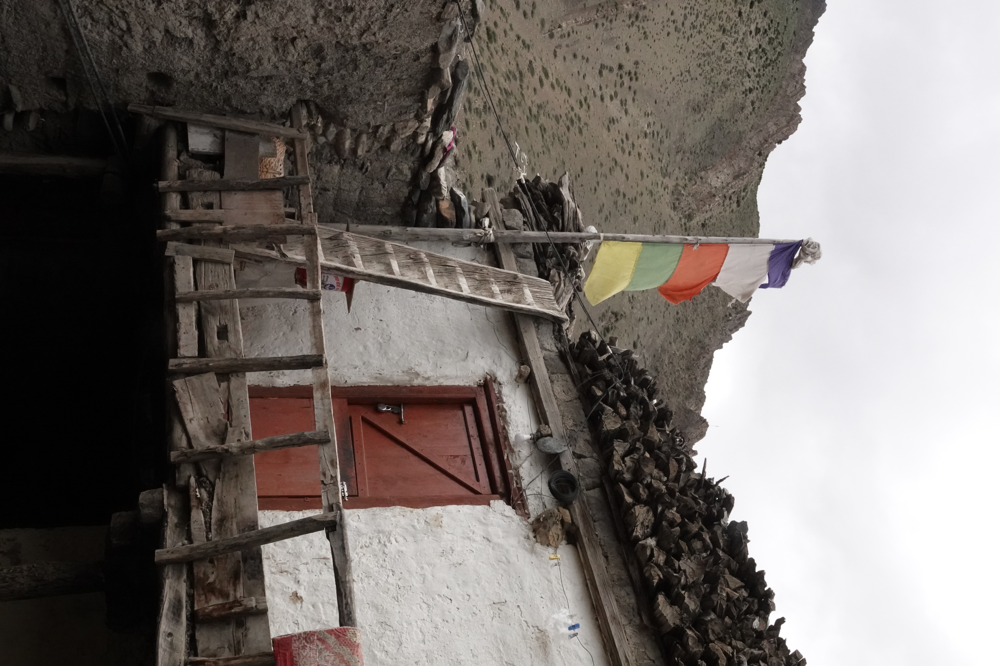
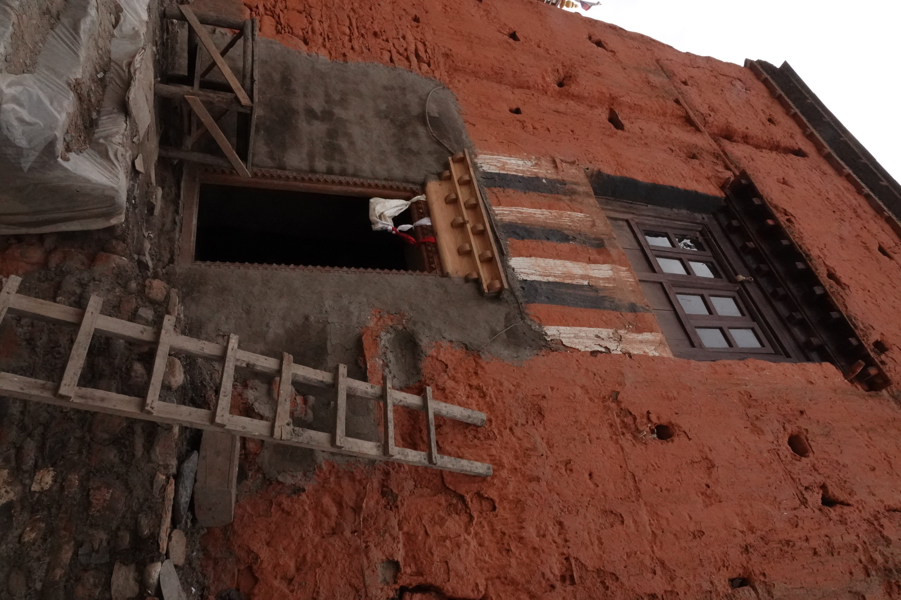
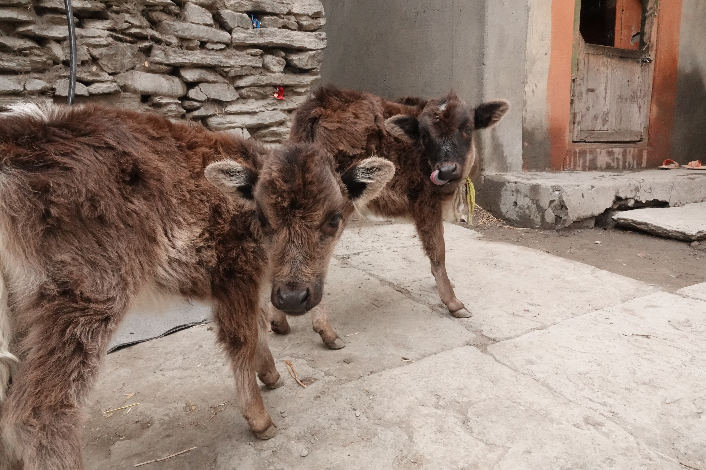
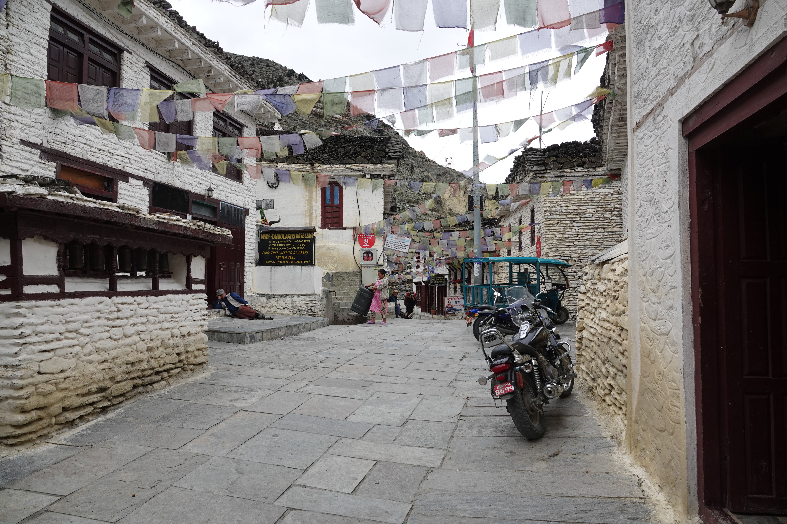
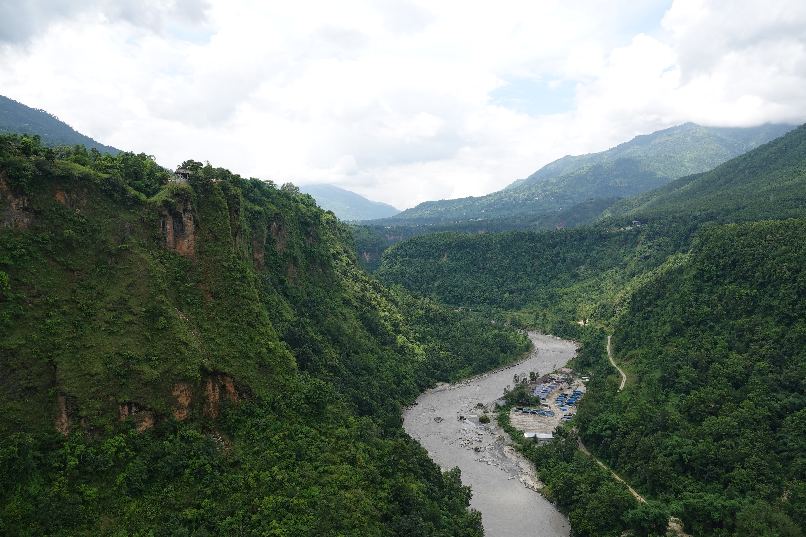
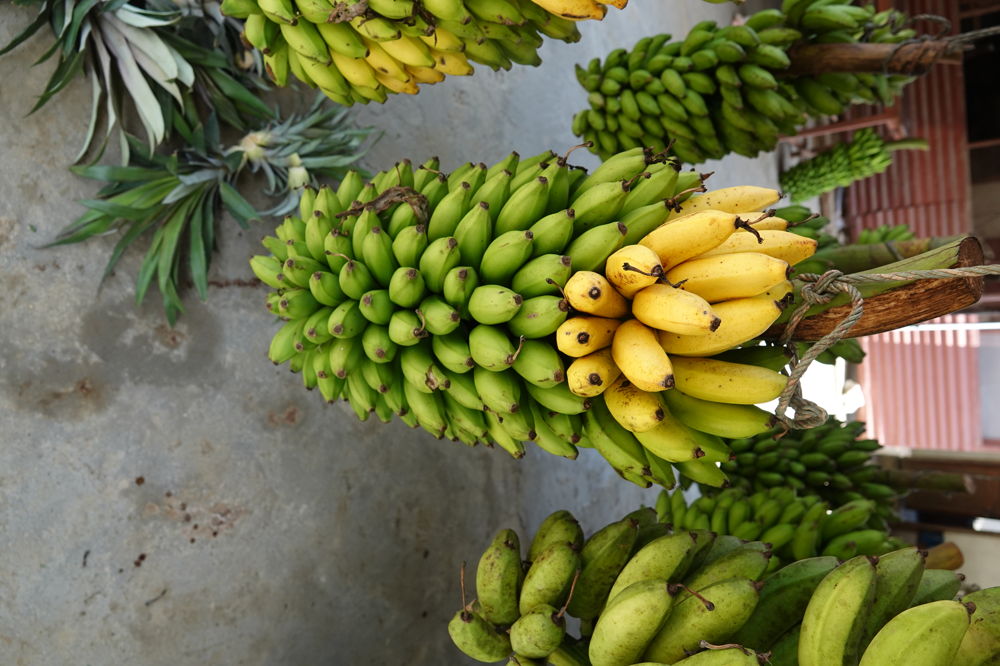

At the end of my trip I was fortunate enought to visit Lower Mustang. I drove from Kathmandu to Pokhara,
and then up North to Jomsom, then through Kagbeni to Muktinath. It was an absolutely beautiful trip, and
I got to visit some of the oldest towns and monasteries in Nepal.
Boats in Phewa Lake in Pokhara.

Prayer flags on a footbridge just outside of Jomsom.

The view from Kutsab Terenga Gumba near Jomsom.

The door to the main shrine hall of Kutsab Terenga Gumba.

A house in the ancient town of Kagbeni.

Kag Chode, the Sakya Monastery in Kagbeni, which is over 500 years old!

Some friends in Kagbeni!
Some of the 108 sacred water spouts at Muktinath. Muktinath is the highest altitude Hindu temple
in the world.
Prayer flags on a hillside above Muktinath temple.

A street in the town of Marpha, the apple capitol of Nepal, and a beautiful quant little town.

View from a footbridge near Pokhara.

Fresh bananas at a fruit stand on the way back from Pokhara.